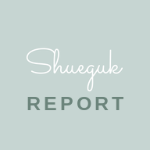

SHUEGUK 시험 등록
선생님 전용 페이지입니다.
비밀번호를 입력해주세요.
새 시험의 제목·범위·문항·총평을 입력하고 학생을 배정해 등록하면, 배정된 학생의 개별 페이지에 표시되고 복기 링크도 만들어집니다. 입력한 내용은 구글시트의 ‘보고서목록’·‘문항’ 탭에 저장됩니다.
기간을 고르면 제목 앞에 자동으로 붙습니다. 학생·선생님 화면에서 이 기간으로 먼저 골라 들어가게 됩니다.
기간·학교·학년·과목을 고르면 제목이 자동으로 만들어져요. 필요하면 아래 제목을 직접 다듬어도 됩니다.
이 제목이 시험을 구분하는 기준입니다. 시험마다 겹치지 않게 정해주세요. 같은 제목으로 다시 저장하면 덮어써집니다(수정).
여기서 고른 학생의 개별 페이지 ‘지필고사 분석지’에만 이 시험이 표시됩니다. 전 학년 / 학년 / 개인 / 일부 중에서 고르세요. (특정 학교 학생만 고르려면 일부 → 학교로 거른 뒤 ‘보이는 학생 모두 선택’)
고른 뒤 맨 아래 저장 버튼을 눌러야 배정이 저장됩니다.
시험지 순서대로 추가하세요. 지문에 여러 문항이 딸리면 ＋ 지문 묶음, 혼자면 ＋ 단독 문항. 아래 버튼을 누르면 새 문항이 버튼 위로 쌓입니다.
전체 0문항
문단은 빈 줄로 구분됩니다.